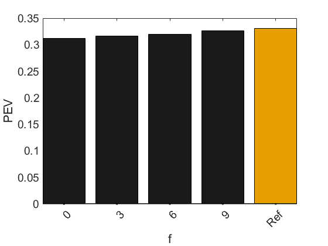
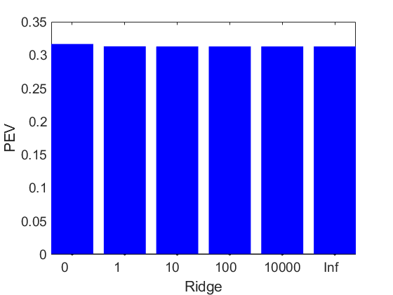
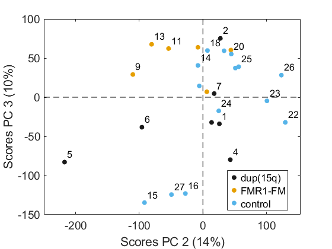
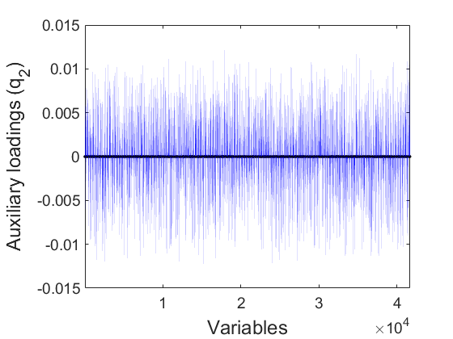

The microarray expression data from this study have been submitted to GEO
under accession number GSE7329. "All Sparse PCA Models Are Wrong, But Some Are Useful. Part III: model interpretation" Submitted to Chemometrics and Intelligent Laboratory Systems. 2025
Dependencies: MEDA Toolbox v1.8 at https://github.com/codaslab/MEDA-Toolbox SPASM Toolbox at https://www2.imm.dtu.dk/projects/spasm
coded by: Jose Camacho Paez (josecamacho@ugr.es) last modification: 31/Mar/2025
Copyright (C) 2025 University of Granada, Granada
This program is free software: you can redistribute it and/or modify it under the terms of the GNU General Public License as published by the Free Software Foundation, either version 3 of the License, or (at your option) any later version.
This program is distributed in the hope that it will be useful, but WITHOUT ANY WARRANTY; without even the implied warranty of MERCHANTABILITY or FITNESS FOR A PARTICULAR PURPOSE. See the GNU General Public License for more details.
You should have received a copy of the GNU General Public License along with this program. If not, see http://www.gnu.org/licenses/.
Contents
GSE7329
We add the labels: Following Guerra -Urzola et al., we discard several patients
load GSE7329_RAW.mat ind = find(obs_l=="GSM176586"); X(ind,:) = []; obs_l(ind) = []; class(ind) = []; ind = find(obs_l=="GSM176589"); X(ind,:) = []; obs_l(ind) = []; class(ind) = []; ind = find(obs_l=="GSM176615"); X(ind,:) = []; obs_l(ind) = []; class(ind) = []; pcs = 1:3;
Compute variance estimates for PCA with 5 PCs
X = preprocess2D(X); % autoscale model = pcaEig(X,'PCs',pcs); scores(model,'obsClass',class) % Compute variance estimates in PCA Xest = model.scores*model.loads'; E = X - Xest; totVPCA = 100*sum(sum(Xest.^2))/(sum(sum(Xest.^2))+sum(sum(E.^2)))
ans =
1×3 Figure array:
Figure Figure Figure
totVPCA =
33.0882

PEV vs sparsity: SPCA-Z multi-component, truncated search
clc PEVpq = []; fp = []; D = min(size(X)); nze = [1:round(D/10):D 4323]; ridge = [0 1 10 100 10000 Inf]; thres = 0.05 flag = 0; tic for j1=1:length(nze) for j2= 1:j1 for j3= 1:j2 vec = nze([j1 j2 j3]) for j=1:length(ridge) for i=1:length(pcs) p = spca_zouhastie(X, [], pcs(i), ridge(j), -vec(1:pcs(i))); t = X*p; [u,s,v]=svd(X'*t,0); q=u*v'; fp(i,j,j1,j2,j3) = length(find(p.^2)) - length(find(sum(p.^2,1))); PEVpq(i,j,j1,j2,j3) = 1 - sum(sum((X - X*p*inv(q'*p)*q').^2))/sum(sum(X.^2)); if (100*PEVpq(i,j,j1,j2,j3)/totVPCA) > (1 - thres) flag = 1; break end end end if flag, break; end end if flag, break; end end if flag, break; end end total_time=toc close all
thres =
0.0500
vec =
1 1 1
vec =
4 1 1
total_time =
5.0909
Plot the truncated razor plot
ufp = unique(fp); PEVfp = []; for i=1:length(ufp) ind = find(fp == ufp(i)); mind = find(PEVpq(ind)==max(PEVpq(ind)),1); PEVfp(i) = PEVpq(ind(mind)); end val = num2cell(ufp); val{end+1} = 'Ref'; f = plotVec([PEVfp totVPCA/100],'ObsClass',[2*ones(1,length(PEVfp)) 1]); legend('off') ylabel('PEV') xlabel('f') a=get(f,'Children'); set(a,'XTickLabel',val); set(a,'XTick',1:length(val)); set(a,'XTickLabelRotation',45); saveas(gcf,'Figures/razorgse'); saveas(gcf,'Figures/razorgse.eps','epsc');
Plot the truncated razor plot per component
ufp = unique(fp); PEVfp2D = []; for i=1:length(ufp) for j = pcs ind = find(fp(j,:) == ufp(i)); mind = find(PEVpq(j,ind)==max(PEVpq(j,ind)),1); if ~isempty(mind) PEVfp2D(j,i) = PEVpq(j,ind(mind)); end end end figure surf((((ones(length(pcs),1)*ufp')))',(pcs'*ones(1,length(ufp)))',(PEVfp2D)') hold on pcolor((((ones(length(pcs),1)*ufp')))',(pcs'*ones(1,length(ufp)))',(PEVfp2D)') axis([ufp(1) ufp(end) pcs(1) pcs(end)]) colorbar ylabel('# Components') xlabel('f') zlabel('PEV') saveas(gcf,'Figures/surfacegse'); saveas(gcf,'Figures/surfacegse.eps','epsc');
Select ridge penalty: 0
f=plotVec(PEVpq(3,:,2,1,1)); legend('off') ylabel('PEV') xlabel('Ridge') a=get(f,'Children'); set(a,'XTickLabel',ridge); saveas(gcf,'Figures/ridgegse5'); saveas(gcf,'Figures/ridgegse5.eps','epsc');
Visualize multi-model selected with 6 components with two non-zero weights each.
p = spca_zouhastie(X, [], 3, 0, -vec); t = X*p; [u,s,v]=svd(X'*t,0); q=u*v'; r = q*inv(p'*q); model.scores = t*inv(p'*q); f = scores(model,'obsClass',class); for i=1:length(f) figure(f(i)) saveas(gcf,sprintf('Figures/scoresgse%d',i)); saveas(gcf,sprintf('Figures/scoresgse%d.eps',i),'epsc'); end for i=pcs var_l{find(p(:,i)),1} plotVec(-q(:,i),'XYLabel',{'Variables','Sparse weights (p)'}); saveas(gcf,sprintf('Figures/qgse%d',i)); saveas(gcf,sprintf('Figures/qgse%d.eps',i),'epsc'); end
ans =
4×1 cell array
{'NM_001008709' }
{'NM_002951' }
{'NM_153649' }
{'ENST00000307106'}
ans =
1×1 cell array
{'NM_001008756'}
ans =
1×1 cell array
{'ENST00000282169'}
 